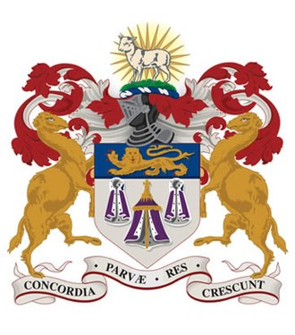
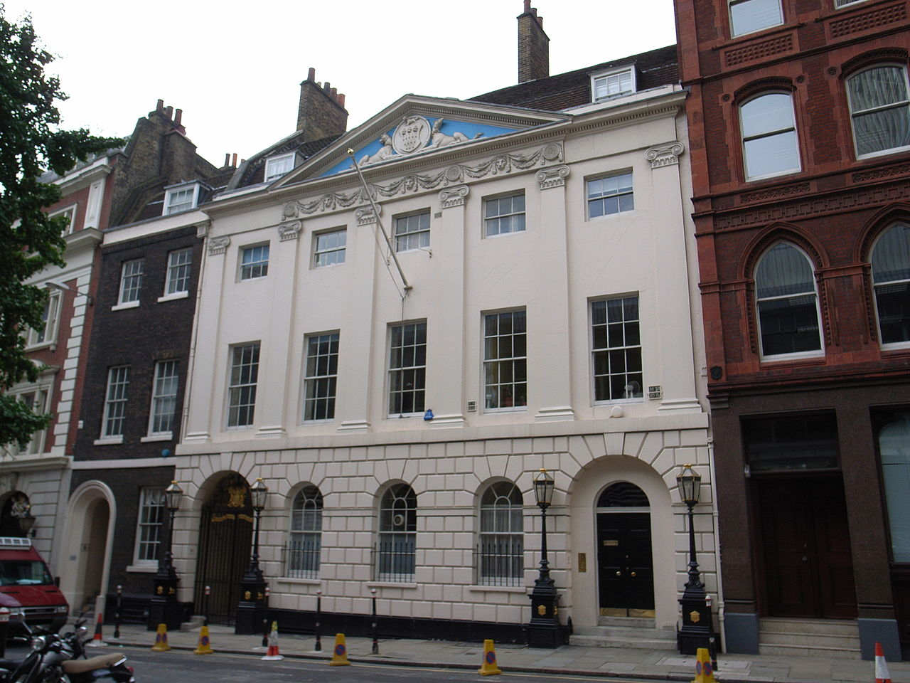
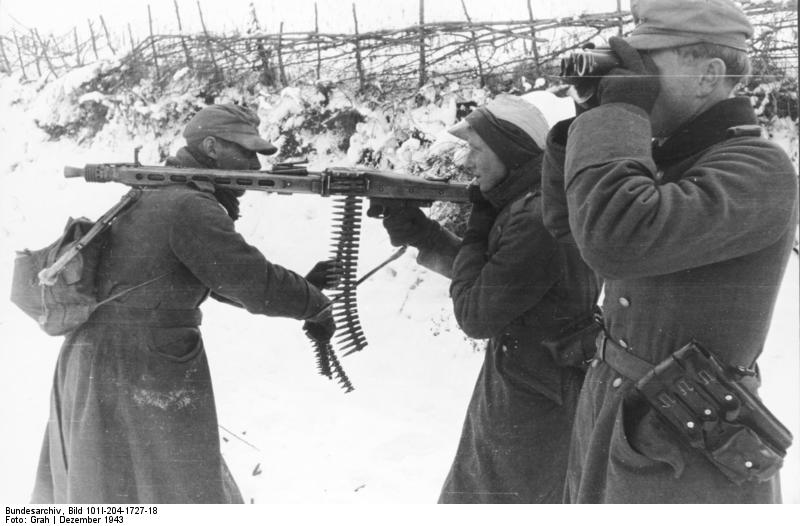
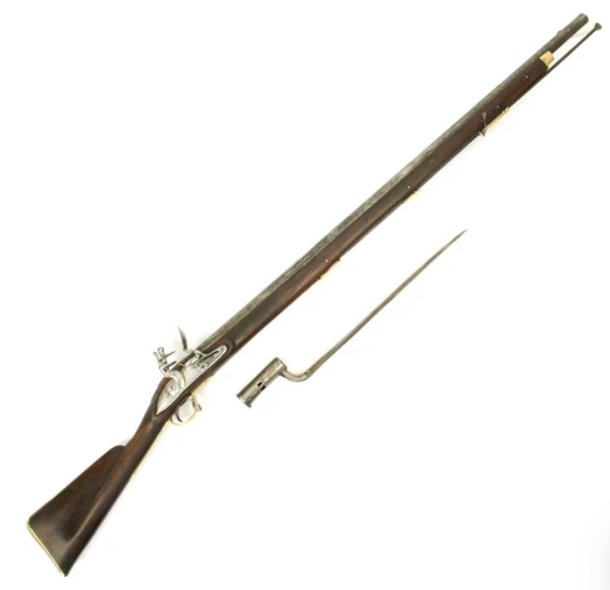

"86 that" - 숫자로 말하는 사회
게시: 2020-02-20T06:30:24+09:00
최근에 TV에서 2007년도 영화인 조디 포스터 주연의 브레이브 원(The Brave One)을 봤습니다. 영화는 뭐 그닥 재미있지는 않았습니다. 그런데 영화 중에서 이런 장면이 나왔습니다. 조디 포스터의 뒤를 쫓는 형사(Terrence Howard 분)가 ex-wife를 어떤 바에서 만나기로 했습니다. 미리 도착해서 한잔 하고 있던 형사는 전처가 도착하자 바텐더에게 '이 숙녀분께 마티니 한잔 드리게' 라고 하는데, 전남편 만나는 것이 달갑지 않았던 여자는 '일 때문에 만나는 거쟎아' 라며 거절합니다. 그러자 형사는 풀죽은 목소리로 바텐더에게 이렇게 이야기합니다. "Eighty-six that." 그 순간 자막에는 대충 이렇게 나왔습니다. "주문 취소하겠네." 저는 원래 귀가 어둡고 머리 회전이 느린 편이라 한국말도 잘 못알아듣는 편이라서 영어 리스닝은 더욱 어렵습니다. 그런데 어떻게 저 단어가 귀에 쏙 들리더라고요. 아마 제가 특히 구별을 못하는 L과 R, F와 P, B와 V 등의 발음이 안 나와서 그랬나봐요. 아무튼 제가 제대로 알아들은 것이 맞나, 또 정말 '86'이라는 숫자에 취소라는 뜻이 있나 싶어서 구글링을 해보니... 정말 있더군요 !
(영화 속에서 조디 포스터의 뒤를 쫓는 형사 역은 테렌스 하워드가 맡았습니다. 이 분은 가장 유명한 출연작이... 아이언맨 1편 아니었던가요 ? 그냥 출연료 협상 적당히 하시지... 너무 쎄게 부르셨었나봐요.)
이 86이라는 숫자가 주문 취소라는 뜻으로 쓰이게 된 것은 몇십년 정도 된 것 같은데, 항상 그렇지만 확실한 어원은 밝혀진 것이 없습니다. 그럴싸한 설명 중 하나는 맨하튼 웨스트 빌리지(West Village of Lower Manhattan)의 베드포드 가 86번지(86 Bedford Street)가 어원이라고 하는 중입니다. 미국 금주령 시절에 여기에는 Chumley's 라는 술집이 있었는데, 경찰 단속을 제대로 피하는 것이 영업 비결 중 하나였습니다. 그래서 이 술집 주인은 평소 경찰 단속반과 내통을 하고 있었는데, 내통하는 경찰은 단속을 하기 전에 먼저 이 술집에 전화를 걸어서 '손님들을 86 하라'라고 했답니다. 이 술집의 뒷문이 베드포드 가 86번지로 나있었고, 앞문은 파멜라 코트(Pamela Court) 쪽으로 나있었거든요. 그래서 뭔가 음식이나 음료를 주문했다가 취소하는 것이 'eight-six'라는 슬랭(slang)으로 굳어졌다고 합니다.
(지금도 맨해튼에 있는 베드포드 가 86번지 뒷문입니다.)
저는 평소에도 영미권 사람들의 특징 중 하나가 숫자로 말하는 것을 좋아하는 것이라고 생각했습니다. 가령 에바 페론에 대한 뮤지컬 에비타의 주제곡인 Don't cry for me Argentina 속에서도 그런 가사가 꽤 나옵니다. 아래 소절에서만 해도 숫자로 표현되는 것이 두 개나 나옵니다. You won't believe me All you will see is a girl you once knew Although she's dressed up to the nines At sixes and sevens with you 여러분들은 절 믿지 않겠지만 저는 여러분들이 전에 알던 그 소녀일 뿐이에요 비록 제가 화려한 옷을 입었고 여러분과 혼란을 겪었지만요 'To the nines'라는 것은 화려하게, 완벽하게 라는 뜻입니다. 이 말의 어원도 모호한데, 이미 18세기에 to the nines라는 표현이 등장합니다. 가령 1719년 스코틀랜드 시인인 해밀턴이 보낸 편지이자 싯귀에 아래와 같은 표현이 나옵니다. The bonny Lines therein thou sent me, How to the nines they did content me. 넌 그안에 즐거운 글귀를 내게 담아 보냈지 그것들에 난 얼마나 만족했는지 이렇게보면 to the nines라는 것이 꼭 9라는 숫자보다는 lines라는 단어와 운율을 맞추기 위해 들어간 것 같기도 합니다. 일설에는 제대로 된 드레스를 만드려면 9피트 길이의 옷감이 필요하다는 말에서 이런 표현이 나왔다고도 합니다. 또 'At sixes and sevens'라는 표현은 혼란스럽다는 뜻입니다. 이 말에는 꽤 근사한 어원이 있습니다. 중세부터 런던 시에는 livery company라고 해서, 일종의 동종 업계들의 조합들이 있었습니다. 이 전통은 현재까지도 이어지고 있어서 현재는 총 110개 조합들이 있습니다. 이런 조합들을 리버리 컴퍼니(livery company)라고 부르는 이유는 이 조합에 가입된 업자들은 자신들만의 제복(livery)를 입었기 때문입니다. 그런데 이 조합들에도 매출액이나 정치적 영향력 등에 따른 서열이 있어서 나름 자존심을 건 대결이 벌어졌는데, 특히 6위와 7위 자리를 놓고 두 조합, 그러니까 재단사 조합(Merchant Taylors)과 피혁업자 조합(Skinners)이 치열하게 다투며 말썽을 많이 일으켰다고 합니다. 이 두 조합은 서로 자기 서열이 앞이라며 100년 넘게 다투다가 결국 1484년 런던 시장 빌즈덴 경(Sir Robert Billesden)이 매년 서로 순위 뿐만 아니라 조합 회관 건물까지 바꿔 쓰도록 판결했고 지금도 그 전통이 이어지고 있습니다.

(재단사 조합의 문장입니다.)

(피혁업자 조합의 회관 Skinners' Hall 입니다. 런던 다운게이트에 위치해있습니다.)
꼭 이런 옛스런 표현이 아니더라도, 흔히 영미권 영화를 보면 등장인물들이 물건 같은 것을 숫자로 표현하는 것을 많이 봅니다. 가령 그냥 총으로 쏜다고 표현해도 되는 것을 forty-five calibre (0.45 구경의 콜트 권총)의 맛을 보여준다고 말하는 것은 범죄 영화 등에 흔히 나오는 것입니다. 제2차 세계대전 영화를 봐도 어디선가 기관총 사격이 날아들 때 우리 감성으로는 그냥 '독일군 기관총이다' 라고 말하면 될텐데, 미군들을 꼭 'MG Forty-Two (MG-42) !"라고 기관총의 정확한 모델명을 외치며 엎드리는 장면을 볼 수 있습니다.

(히틀러의 전기톱이라는 MG-42입니다. 미군이 굳이 'MG-42'라고 외치는 것이 전술적인 이유 때문에 그렇게 훈련을 받았기 때문일 수도 있습니다. 총소리를 영어로 report라고 하는데, 이런 report는 당연히 총기마다 다르고, 그래서 총성을 듣고 적의 화력 등을 짐작하는 것이 전술적으로 의미가 있기 때문입니다. 전에 읽은 제2차 세계대전 과달카날 전투에서 미군의 어떤 총기 총성이 일본군 것과 비슷했기 때문에 사용중지되고 다른 총이 지급되었다는 것을 읽은 기억이 납니다.) 이렇게 숫자로 지칭하는 것이 흔하고 익숙하다는 것은 사회가 규격화되고 산업화되었다는 것을 뜻하기도 합니다. 가령 제가 즐겨읽었던 나폴레옹 전쟁 당시 영국군 장교의 모험담인 Sharpe 시리즈에서도 '17인치짜리 칼날의 맛을 보여준다'라는 표현이 나옵니다. 당시 영국군 표준 머스켓 소총이었던 Brown Bess에 장착하는 총검의 날 길이가 17인치였거든요. 이건 나폴레옹 시대에 이미 영국이 산업 혁명에 들어간 상태라서 표준화된 대량 생산 사회 초기였기 때문에 가능한 이야기입니다. 중세 기사들이 칼 싸움을 할 때 '내 43인치 칼날의 맛을 보여주마' 라고 외치지는 않습니다. 기사들의 롱소드(long sword)가 표준화되었지는 않았으니까요.

(브라운 베스 머스켓 소총과 거기에 꽂는 소켓형 총검입니다. 사실 저 총검으로 베는 것은 무리이고, 저건 순수하게 찌르기용 총검입니다.) 전에 어떤 식당에서 노인 한 분이 다른 노인 일행분들에게 개구충제를 항암치료제로 사용하는 것에 대해 설명하는 것을 들었습니다. 그 분 이야기가 너무 흥미진진해서 저도 가만히 그 분 이야기에 귀를 기울였는데, 과거의 어떤 프랑스 학자가 노벨상을 받는 이야기부터 시작해서, 결국 병원과 국제적 거대 제약사들간의 야합, 그리고 구글과 JTBC의 음모 등에 대해 이야기가 이어지면서 개구충제가 암은 물론 당뇨와 고혈압까지 다 치료하는 것으로 결론이 나더군요. 흥미진진하게 듣던 제가 '가짜 뉴스구나'라고 생각하기 시작한 부분은 이 할아버지가 '우리나라에 개구충제를 복용하는 사람들 수가 8천명인데 그 중 부작용을 겪고 있는 사람은 아무도 없다' 라고 말한 다음부터였습니다. 부작용이 있고 없고를 떠나, 개구충제를 복용하고 있는 사람 숫자가 몇인지는 아마 보건복지부도 파악하고 있지 못할 것입니다. 그 할아버지가 그런 숫자를 어떻게 알겠습니까 ? 숫자로 정확하게 이야기하는 것은 항상 좋은 일입니다. '아주 먼 곳'이라고 이야기하는 것보다는 '23km 떨어진 곳'이라고 이야기하는 것이 훨씬 더 짧은 문장 속에서 많은 정보를 줍니다. 정확하지 않더라도, '많은 학생들'이라고 하는 것보다 '약 200~300명의 학생들'이라고 이야기하는 것이 더 생생한 장면을 머리 속에 떠오르게 하고요. 숫자로 이야기하면 전문가처럼 보이고, 막연한 형용사로 이야기하면 덜떨어진 아마추어처럼 보이는 것이 사실입니다. 저도 직장에서 회의를 할 때 무엇무엇의 원인이 A라고 생각하느냐라는 질문을 받으면 '그럴 확률은 92.7%'라고 답합니다. 그 숫자가 어디서 나온 것이냐고요 ? 그냥 '그럴 확률이 매우 높다'라는 말을 더 그럴싸하게 보이게 하려고 농담반 진담반으로 만들어낸 숫자에 불과합니다. 아마 저처럼 생각하는 사람이 많은지 요즘 유행하는 유튜브 가짜 뉴스에서 너도나도 숫자로 이야기합니다. 물론 그런 숫자를 그대로 받아들이지 않고 과연 저 숫자가 어디서 난 것일까, 과연 저 사람이 정확한 숫자를 파악할 능력이 있는 사람일까 라고 생각해보는 것이 가짜 뉴스가 난무하는 세상에서는 꼭 가져야 할 태도입니다.
Source : https://en.wikipedia.org/wiki/86_(term) https://en.wikipedia.org/wiki/At_sixes_and_sevens https://en.wikipedia.org/wiki/Livery_company#Precedence https://en.wikipedia.org/wiki/Worshipful_Company_of_Merchant_Taylors https://en.wikipedia.org/wiki/Worshipful_Company_of_Skinners